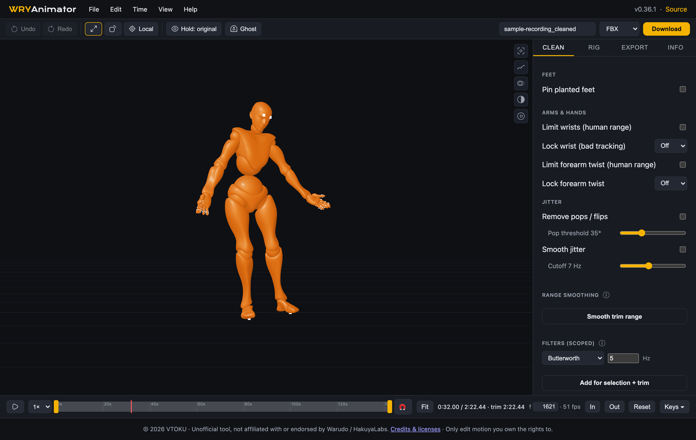
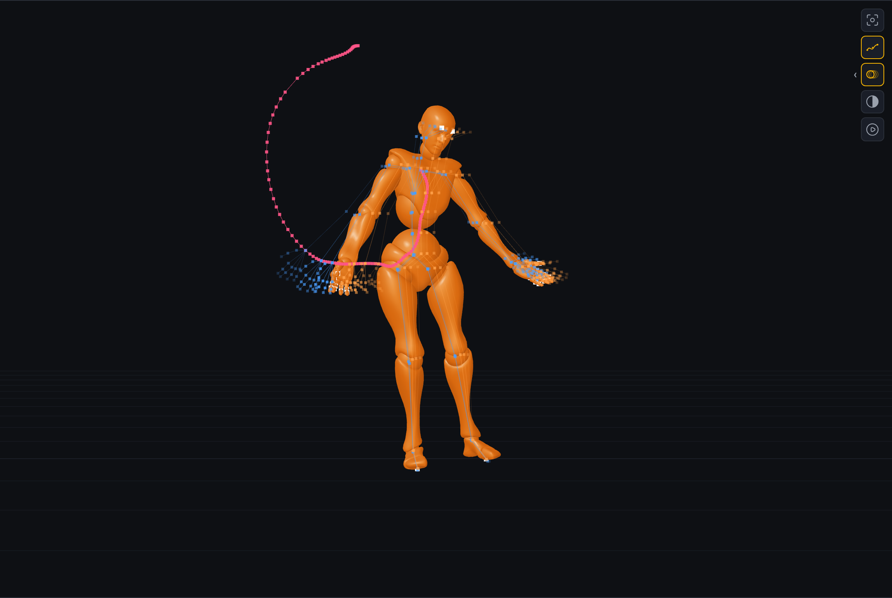
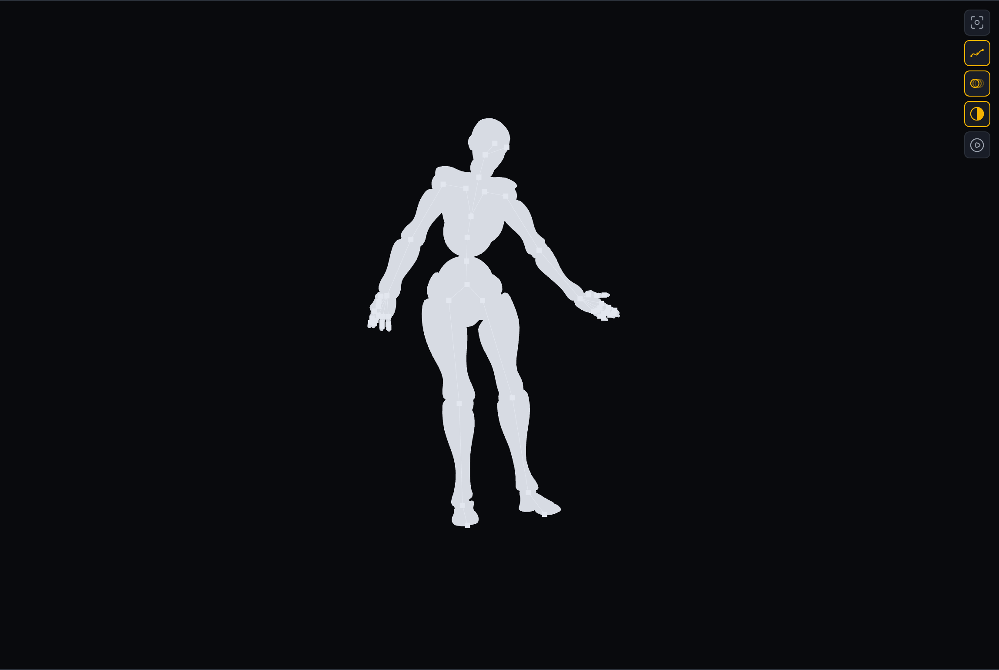
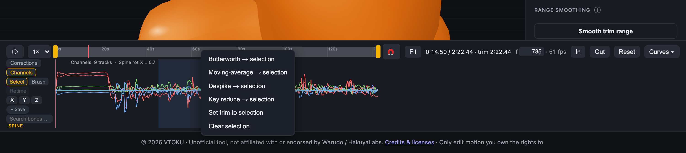
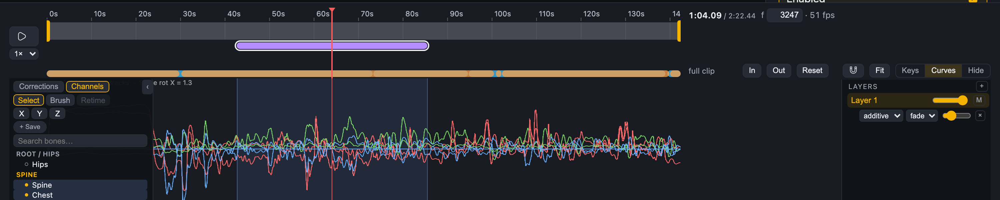
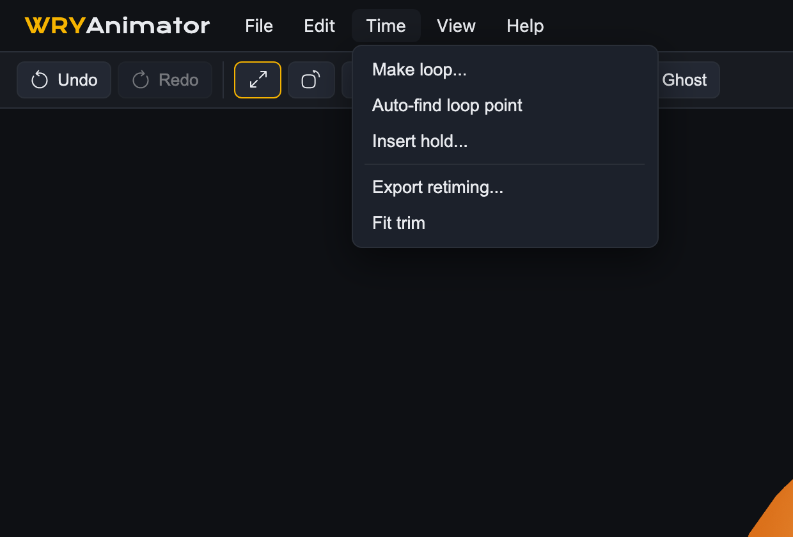
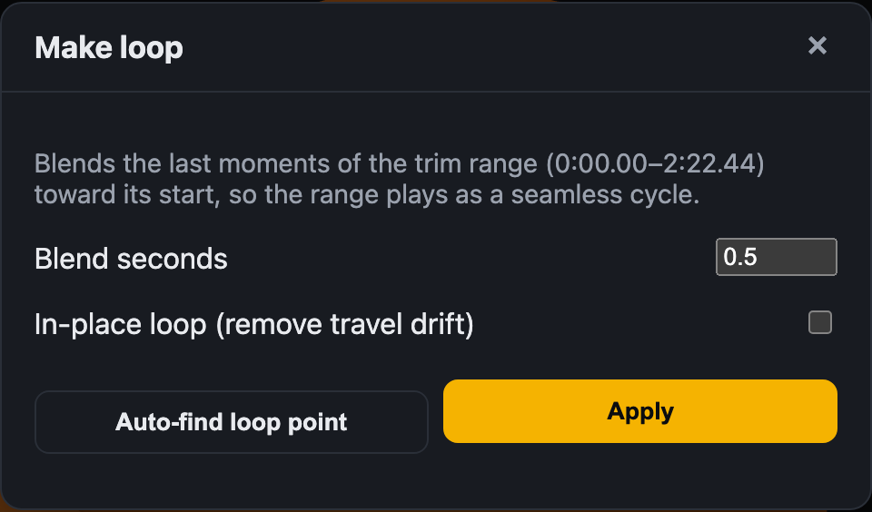
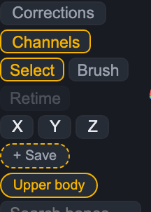
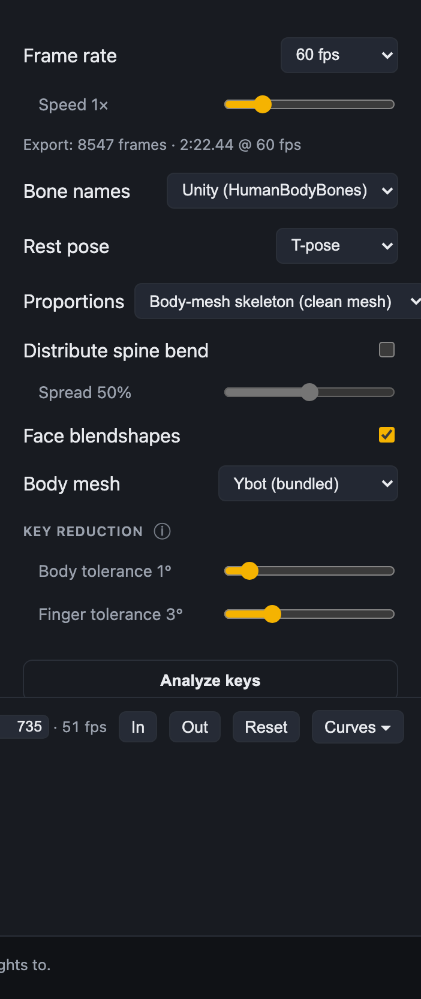
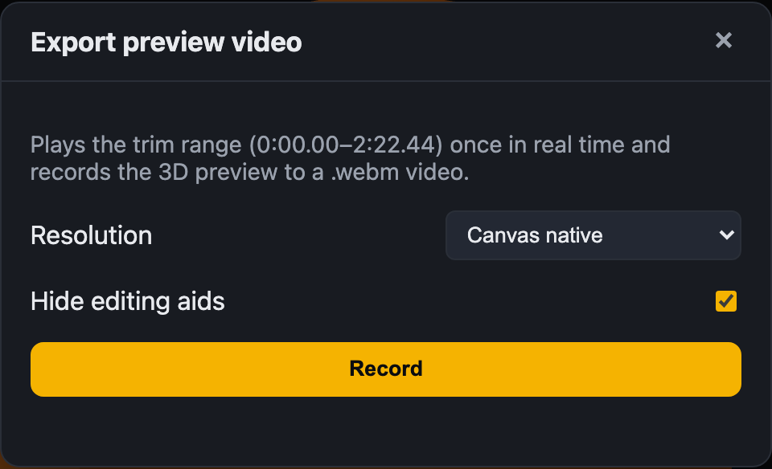

The editor opens with the bundled body on stage. Drop a .wanim recording (from Warudo's animation recorder) anywhere on the page, or use File → Open. The recording converts in the browser and appears in the 3D preview with the full editing UI.
Your edits are cached automatically per recording. If the tab closes or reloads while you're working, the session comes right back; an older session isn't reopened silently — a small "Restore last session" bar offers it instead. File → New scene starts fresh and forgets the cached session, and File → Save scene writes everything to a file you can share or archive.

The editor: 3D preview with the viewport aid strip (top right of the canvas), the Clean / Rig / Export / Info dock, and the zoomable transport.
You can also open a .fbx animation, or start an asset-only session from a VRM/FBX body with no recording at all — useful for authoring poses and short clips from scratch.
Viewport & preview aids
Orbit with the left mouse button, pan with the middle button, zoom with the wheel. Press C (or the top button on the viewport strip, also View → Frame character) to frame the character wherever they've walked. Below it, the strip toggles the preview aids (each also lives in the View menu, and the chevron on each button opens its settings):
Motion paths — draws the world-space trajectory of the selected control (or the hips) over a window around the playhead, with per-frame dots. The path updates live as you edit, so you can watch an arc clean up as filters land.
Onion skin — ghost skeletons with joint dots at configurable frame steps around the current time: cool-tinted before, warm-tinted after, fading with distance. They draw through the body so they stay readable.
Silhouette — pose-readability mode: the character becomes a single flat light shape against a dark stage, with the selected chain overlaid in gold. Grid and other overlays hide while it's on.
Clean playback — hides handles and gizmos while playing, restores them when you pause.

Motion paths (the selected control's arc — here the right hand) + onion-skin ghosts with joint dots.

Silhouette flattens the character to a two-tone shape for pose readability.
Timeline, trim & zoom
The transport at the bottom is shared by the strip, the dope sheet, and the curve editor — one zoomable time mapping for all three. Wheel-zoom around the cursor, middle-drag (or Alt+drag) to pan, and Fit to frame the clip or trim. The ruler adapts from seconds to frames as you zoom in.
Trim handles (yellow) set the playback loop and the export range. In/Out set them at the playhead; Reset clears.
The frame box jumps to an exact frame; the magnet snaps drags to keys and the playhead.
Keys ▾ / Curves ▾ cycles the under-strip panel between the dope sheet and the curve editor.
Ruler markers, filter-range underlines, and cleaning tick marks show where things happened on the timeline.
Cleaning & scoped filters
The Clean tab has one-click whole-clip fixes: foot-plant pinning, wrist/forearm limits, pop removal (despike), and zero-lag jitter smoothing. Hold Ghost in the top bar to compare against the uncleaned recording at any time.
For surgical work, scoped filters apply one filter to chosen bones over a chosen time range, non-destructively stacked and each removable:
Butterworth — zero-lag low-pass, the smoothest general cleaner (cutoff in Hz).
Moving-average — quick box smoothing (width in frames).
Despike — removes single-frame pops (threshold in degrees).
Key reduce — keeps only the frames the motion needs within a tolerance and interpolates between them: flattens micro-jitter and collapses what the exporter has to keep.
The fastest way to scope a filter is directly on the curves: open Curves ▾ → Channels, pick bones in the tree, drag a band across the bad section, and right-click:

Band-select a span on the Channels curves, right-click, and apply any filter to exactly those bones over exactly that span. "Set trim to selection" moves the trim handles to the band.

Each filter becomes a chip in the Clean tab — click to zoom the timeline to its range, untick to bypass, × to delete. Colored underlines on the timeline show where each acts.
Curve editor
The curve editor (under the timeline, Curves ▾) has two modes, chosen at the left:
Channels — the dense baked motion of any bones you pick in the tree (exactly what exports). View, band-select, and scope filters here; hold Ghost to overlay the uncleaned source.
Corrections — the editable keys of the active rig layer for the selected control, as per-axis position (cm) and rotation (°) curves.
Working with keys (Corrections mode)
Marquee-drag over empty space to select keys (Shift adds); drag any selected key to move the whole selection vertically. A still click seeks.
With 2+ keys selected, a transform box appears — drag its top/bottom edges to scale values, drag inside it to offset them.
The Select / Brush / Retime tool row switches drag behavior: Brush paints smoothing onto the exact curves under the circle (dwell = stronger; in Channels mode a stroke becomes one scoped smoothing filter), and Retime (or holding R) slides selected keys in time, frame-snapped, never crossing other keys.
Right-click for the full menu: Insert key, Delete, Smooth, Reduce, Match previous/next, Flatten to first, Blend toward neighbors, and per-key easing (linear / smooth / step).
Wheel-zoom and pan work here too, locked to the timeline strip above.
Rig layers & corrections
The Rig tab is a control-rig layer system: click a colored handle on the figure, pose it (IK for hands/feet with pole targets, FK for spine/head/fingers), and key it on a layer. Additive layers nudge the motion ("elbow +20° here"); override layers pin it. Layers stack with weights and per-layer fade, and everything bakes into the export. Finger posing works from the channel tree — selecting a finger row pops a gizmo on that chain.
The Key reduction panel in the Rig tab estimates how many keys each body part could drop at a chosen tolerance — use it to pick tolerances before adding a Key reduce filter.
Time tools: loops, holds, retiming

The Time menu collects the timing tools.
Make loop… — turns the trim range into a seamless cycle by blending the tail toward the start (value and velocity match at the seam). In-place removes root travel drift so walk loops don't teleport. Applied non-destructively as a removable chip.
Auto-find loop point — scans the trim range for the most similar pose pair at least a second apart and moves the trim handles there.
Insert hold… — freezes the playhead pose across a span (whole body or the selected control's chain) on a dedicated "Holds" layer, releasing cleanly at the end. Delete the keys to remove it.
Export retiming… — jumps to the frame-rate and speed controls in the Export tab.

Make loop: blend seconds, in-place option, and auto-find in one dialog.
Selection sets
Above the channel tree's search box, + Save stores the current bone selection under a name. Click a chip to recall it (Shift-click adds it to the selection), right-click to rename or delete. Sets persist with the session and scene file, and are also available under View → Selection sets — handy for jumping between "fingers", "left arm", or "everything but hips" scopes while filtering.

Selection sets live above the channel tree; the same selection scopes curves and filters.
Exporting

The Export tab: frame rate + speed with a live frame-count readout, bone naming, rest pose, proportions, face blendshapes, body mesh, and key-reduction tolerances.
FBX — binary FBX 7.5 (MotionBuilder-compatible): skeleton, animation take, a one-key T-pose take for characterization, optional skinned body mesh and face blendshapes. Redundant keys are dropped at write time within a visually lossless tolerance, so files stay lean — pair with the Key reduce filter for the biggest savings.
VRMA — VRM animation with humanoid tracks and expression curves.
WANIM — re-export the cleaned recording for Warudo itself.
Shogun FBX — a Vicon-Shogun-style target rig export when a VRM body is loaded.
Frame rate & speed — export at 30/50/60/120 or a custom rate, and bake a 0.25×–4× speed change; the readout shows the resulting frame count and duration live.
Preview video — File → Export preview video… plays the trim range once in real time and records the 3D preview to a .webm (canvas-native or 1080p letterboxed, with editing aids hidden).

Preview video export — an in-browser screen recording of the preview over the trim range.
Everything runs client-side — recordings never leave your machine. Keyboard shortcuts are listed under Help → Keyboard shortcuts. WRYAnimator is an unofficial tool, not affiliated with or endorsed by Warudo / HakuyaLabs. Only edit motion you own the rights to.